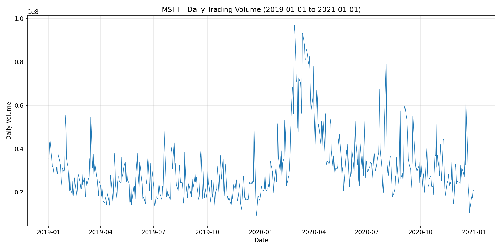
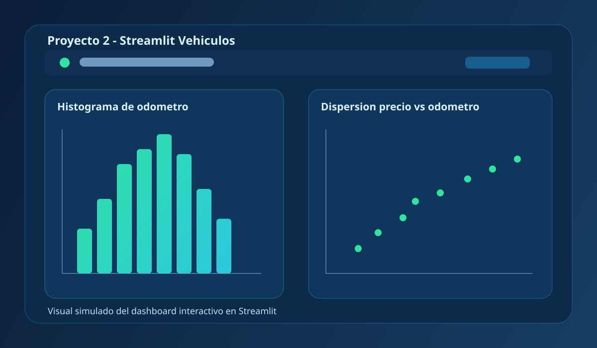
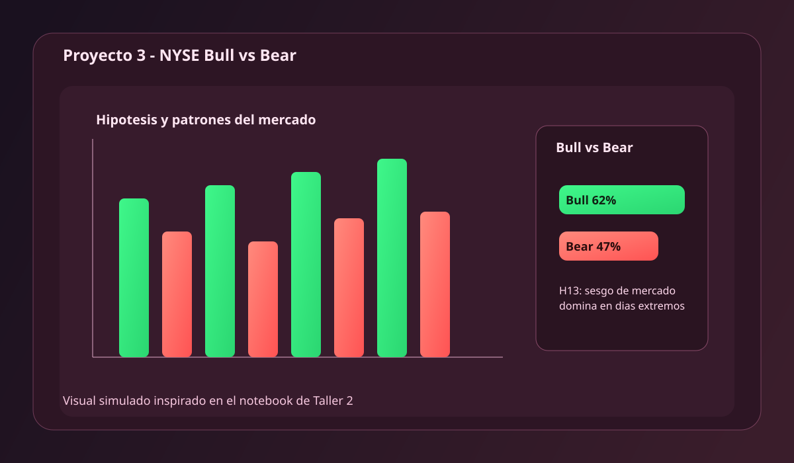
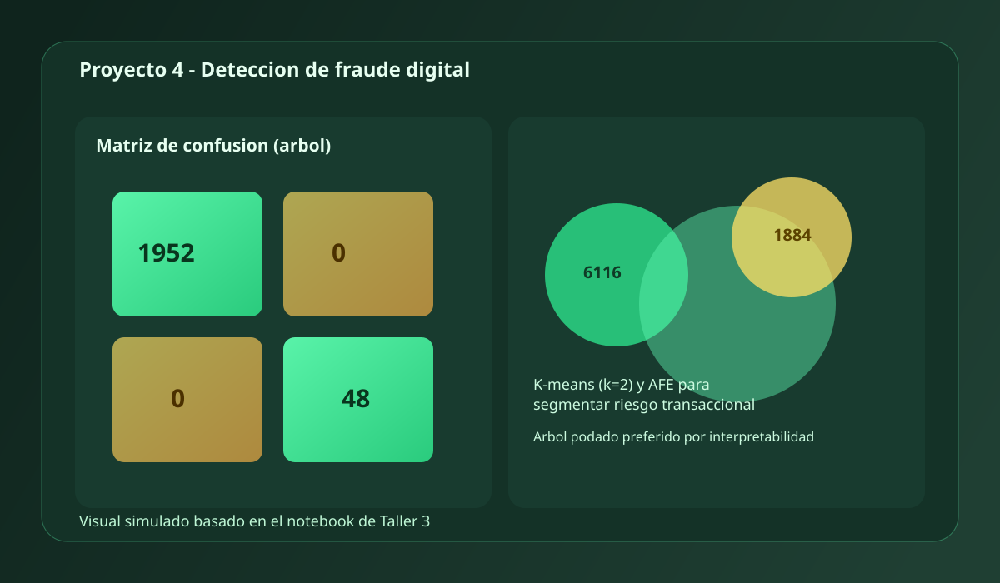

MVP para GitHub Pages
Portafolio profesional de Data Science
Este sitio resume mis proyectos de analisis de datos, machine learning y visualizacion. El enfoque esta en traducir datasets reales en decisiones de negocio claras, medibles y accionables.
MVP para GitHub Pages
Este sitio resume mis proyectos de analisis de datos, machine learning y visualizacion. El enfoque esta en traducir datasets reales en decisiones de negocio claras, medibles y accionables.
Soy profesional en formacion continua en analitica aplicada, con interes en finanzas, riesgo y productos digitales. Me enfoco en construir analisis reproducibles y comunicar resultados de forma clara para equipos tecnicos y de negocio.
Mi metodo combina limpieza de datos, diseno de hipotesis, evaluacion rigurosa de modelos y visualizacion ejecutiva. Trabajo con Python, R y herramientas de BI para convertir informacion compleja en planes de accion concretos.
Cada proyecto incluye contexto, enfoque analitico y conclusiones principales. La seleccion mezcla casos financieros, producto digital y deteccion de fraude.

Proyecto 1Comparacion de comportamiento bursatil entre GOOG y MSFT (2019-2021) con extraccion automatica desde yfinance.
Se construyo una rutina para descargar OHLCV, dividendos y estadisticas descriptivas de dos tickers tecnologicos.
El script calcula volumen promedio, compara tickers y genera visual de volumen diario para MSFT, incluyendo contraste Q1 2020 vs 2019.
Se consolidaron salidas CSV/PNG listas para exploracion posterior y soporte de decisiones cuantitativas con series historicas consistentes.

Proyecto 2Aplicacion interactiva para explorar anuncios de venta de vehiculos en EE. UU.
Se desarrollo una app ligera para usuarios no tecnicos que necesitan revisar rapidamente distribuciones y relaciones clave del dataset.
Incluye botones para crear histograma de odometro y dispersion precio vs odometro con Plotly, permitiendo exploracion guiada.
El MVP facilita EDA visual inmediato y sirve como base para incorporar filtros, segmentacion por marca y recomendaciones de precio.

Proyecto 3Analisis de acciones S&P 500 para estimar probabilidad de resultados bull/bear y validar hipotesis de mercado.
Dataset masivo de operaciones diarias para responder preguntas de negocio sobre desempeno, riesgo y patrones de retorno.
Se evaluaron hipotesis por empresa, volatilidad, autocorrelacion y estacionalidad; ademas, se contrasto el efecto de mercado en dias extremos.
Hallazgos relevantes: en jornadas extremas, la proporcion de bull sube a 62% vs 47% en dias normales; se identificaron emisoras y meses con comportamiento diferencial.

Proyecto 4Diseno de piloto analitico para deteccion de fraude, con enfoques supervisados y no supervisados.
Caso de riesgo operacional con perdidas millonarias y necesidad de reducir falsos positivos sin afectar experiencia de cliente.
Se entreno arbol podado y SVM lineal (con y sin balanceo), junto con K-means/PAM y analisis factorial para segmentar patrones transaccionales.
En test, el arbol reporta 1.00 de accuracy/sensibilidad/especificidad y se prioriza por interpretabilidad; se recomienda validar fuga de informacion con nueva muestra.
Si quieres colaborar en proyectos de analitica, visualizacion o machine learning aplicado, escribeme por email o conecta conmigo en LinkedIn y GitHub. Este MVP esta listo para publicarse en GitHub Pages.